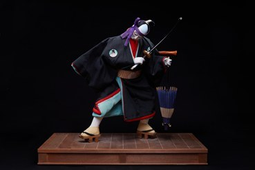

Sukeroku là tác phẩm thuộc dòng Noh & Kabuki Ningyō, tái hiện nhân vật chính trong vở 《Sukeroku Yukari no Edo Zakura》, một trong những kiệt tác nổi tiếng nhất của nghệ thuật sân khấu Kabuki. Nhân vật Sukeroku từ lâu đã trở thành biểu tượng của tinh thần nghĩa hiệp và hình tượng người anh hùng trong văn hóa Nhật Bản.
Tác phẩm khắc họa Sukeroku trong bộ trang phục đặc trưng của Kabuki với áo haori màu đen, guốc gỗ truyền thống, thanh kiếm bên hông và chiếc ô giấy. Dáng đứng mạnh mẽ cùng tư thế chuyển động đầy khí thế tái hiện phong cách biểu diễn giàu tính kịch của sân khấu Kabuki. Mỗi chi tiết trên trang phục và phụ kiện đều được chế tác thủ công, thể hiện trình độ tinh xảo của các nghệ nhân Nhật Bản.
Trong văn hóa Nhật Bản, Sukeroku tượng trưng cho lòng dũng cảm, chính nghĩa và sự hào hiệp, sẵn sàng đứng lên bảo vệ lẽ phải và những người yếu thế. Tác phẩm không chỉ giới thiệu vẻ đẹp của nghệ thuật búp bê truyền thống mà còn góp phần gìn giữ tinh thần và giá trị của sân khấu Kabuki – một di sản văn hóa đặc sắc của Nhật Bản được UNESCO công nhận là Di sản văn hóa phi vật thể của nhân loại.
助六は能人形・歌舞伎人形の作品で、歌舞伎の名作として最も知られる演目のひとつ『助六由縁江戸桜（すけろくゆかりのえどざくら）』の主人公を再現しています。助六は古くから、日本文化における侠気と英雄像の象徴となってきました。
本作は、黒の羽織、伝統的な下駄、腰の刀、番傘という、歌舞伎の助六ならではの衣装をまとった姿を表しています。力強い立ち姿と勢いのある動きが、歌舞伎の演劇性豊かな演技様式を再現しています。衣装や小道具の細部まで手作業で作られ、日本の職人の精巧な技を示しています。
日本文化において助六は、勇気、正義、そして弱い立場の人々や正しいことのために立ち上がる侠気の象徴です。本作は伝統人形の美しさを伝えるだけでなく、ユネスコの無形文化遺産にも登録されている日本の優れた文化遺産、歌舞伎の精神と価値を今に伝えています。